About
Hello, my name is Noah Christensen. I graduated in 2020 as Computer Science major from University of California, Riverside. Currently, my knowledge most broadly covers the coding languages of C, C++, C#, Java. I have learned to use both the Unity and Unreal 4 game engines. Lastly, I learned HTML and CSS in order to make this website. I am interested in both frontend and backend development. I hope to advance in all programming aspects. My passion in programming is most deep with the possible to create and build.

Projects
Imbedded Invaders
A game created for the UCR class Imbedded Systems using C. Based on the classic arcade game Space Invaders. I was able use to the pixel-based layout and state diagrams in order to make a working game on simple hardware (e.g. Microcontroller, Nokia Display, joysticks, pushbuttons, breadboard).
Project Link: https://docs.google.com/document/d/1XsEwOXn_x7GUp7IglQ-ALVCeMHCyK4_8860pu110yVc/edit?usp=sharing


Room Escape in Unreal
A very simple game made in Unreal Engine 4 done in the Udemy course: Unreal Engine C++ Developer. The player begins in a room and must escape. The mechanics are basic movement and the ability to pick up objects. To escape the room the player must place objects of enough weight onto a trigger volume. This will allow the player to escape through the door that would otherwise be closed. Only two scripts were used. One to rotate the door open and closed when enough weight was on the pressure plate. Another script to grab and release objects with physics.


 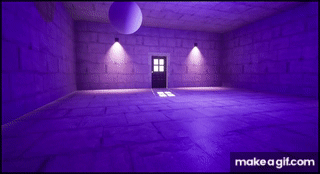
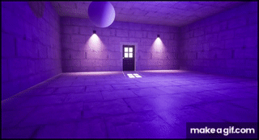
Suit Slayer
A 2D pixel-based platformer made in Unity. The player controls a person in a brown trench coat equipped with a gun and a sword. The player can use the gun and sword in both the air and ground with each having a different animation. The weapons are used to defeat various enemies. The enemies currently include a stationary gun-man, a walking knife-man, and a drone that drops bombs that explode on the ground. I made extensive use of prefabs to create multiple enemies and produce effects and bullets when necessary. Using the 2D physics component of Unity, I have also managed to control many clashing aspects of the game. The final version of the game will likely be set in a city and the player will go from rooftop to rooftop fighting different enemies to traverse until the end.
Video Link: https://youtu.be/OxlEdMCVCOs


Forest Run
A Virtual Reality game created in a team of three for the UCR Virtual Reality Class. The game is based around games like Temple Run(continuous running games) and has the player running at a linear velocity until they encounter an obstacle or reach the end/goal. The player can move their entire body left and right(immmediate linear velocity) using an analog stick provided with the controller(tested with the Oculus Rift controller) or the WASD keys. The player is then also forced into scenarios where they cannot move their body any further to the right or left, but there are flying objects coming toward them(birds). At this point the player can use the Virtual Reality headset to adjust their head collider position to dodge. We were able to use the Unity provided terrain assets and nature pack to create two forest settings(one in the day, one in the evening with a flashlight). We primarily used world space menus for the user UI and interfacing based on VR guidelines. Lastly, we gave the game running sounds, bird chirps, and bear attached behind the player to get a better feel for the setting.
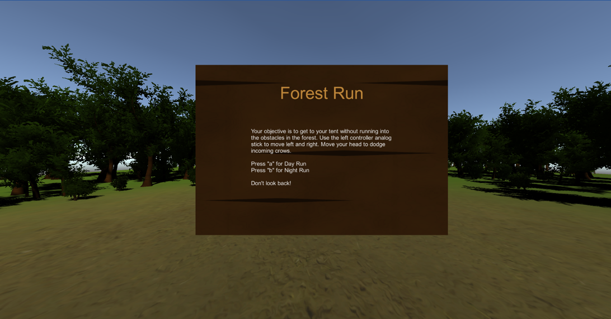 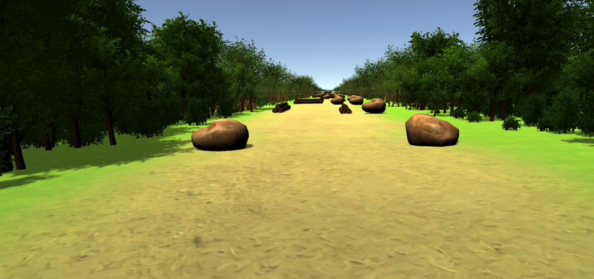 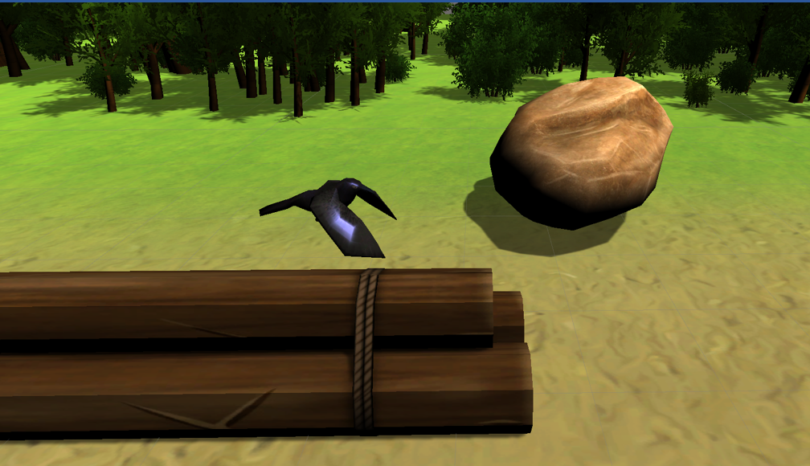 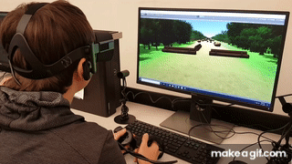Rope
A project Created in the Unreal 4 engine under the prompt “make a 3d platformer with all core gameplay coded yourself in C++ and use minimal blueprints”. The game mechanics primarily revolves around the player being able to climb and swing on ropes. The rope itself consists of a base(a simple cylinder) that is used to connect the rope to surfaces. A physics contraint is attached to base(stationary) and a sphere(moveable with gravity enabled) to simulate a rope. The visual portion of the rope simply uses a cable component attached to the sphere and base. To allow players more freedom there is a “rope gun” that raycasts to the first collision intersecting from where the player is facing. The player is given a dot that appears red if they can shoot the rope and is the surface is out range and valid and appears green when the player can shoot the object is valid and in range. The rope base is then placed perpindicular to the surface to look as if it is sticking into it. Gravity lets the rope down and after a couple seconds the player is free to swing or climb on the rope. The climbing simply uses the rope collider rotation and moves the player "up" or "down" based on said collider. The swinging adjusts the location of the sphere of the rope, however the player stays stationary left like this. Using trigonometry the player is set to flying and adjust to the correct 3D location every tick while on the rope. The player is then able to jump or let go from the rope and continue normally(regular gravity/walking/jumping). Finally, the game includes a dash giving the player high speed speed for a split second and then restoring the player's original velocity. The current basic UI includes an indicator for when the player is able to grab the rope and when the player has switched between climbing and swinging mode. Next for the game would be adding enemies likely based on a stealth component where the player must use the ropes to manuever around the enemies to reach the end of the level.
Project Link: https://github.com/noahchristensen/UnrealPlatformer2020
Video Link: https://youtu.be/0tbk1sr6lvs
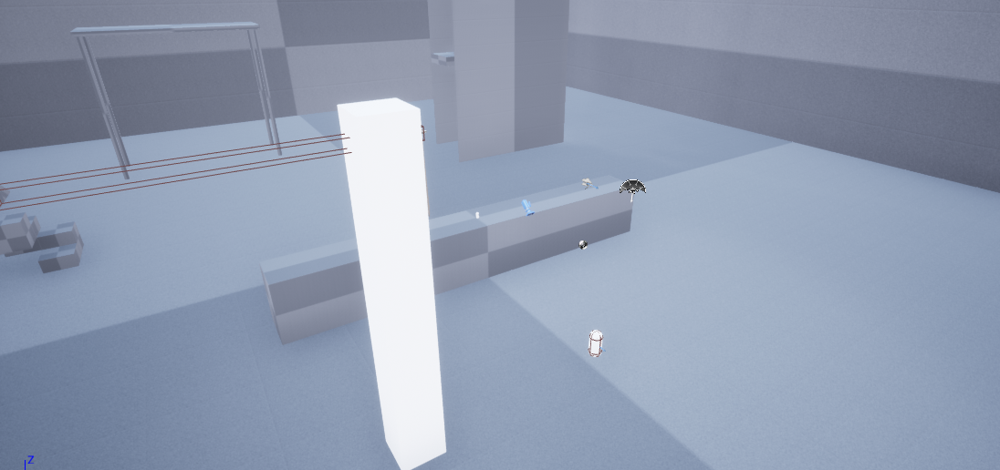 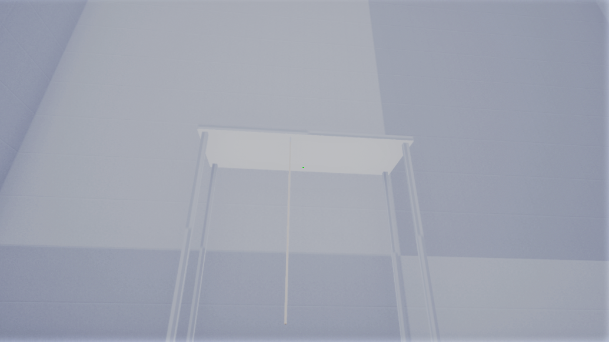 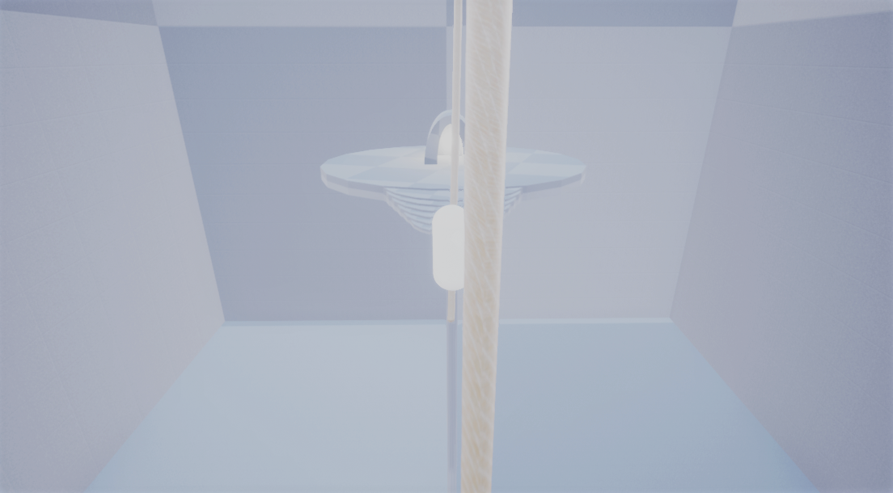 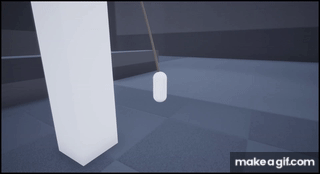ProjectOYG
Another project created in Unreal Engine 4, but this time I wanted to go more in depth and create a real-time RPG styled game. The Project is a mix of both various Blueprints and C++. For the project I learned blender in order to model, texture, rig, and animate my own assets. The project started with the modeling of a humanoid character called a goblin. Once I had the goblin made I dedicated a large portion after to work on the character functionality. The project intially used just the C++ 3rd person template to move the goblin. The added features besides the default movement and jumping include: rolling, sprinting, and climbing(on specified surfaces). The HUD, done through blueprints/UMG, includes a stamina bars which was binded to the C++ functions like sprinting, rolling, and later attacking. The game's combat works through coded hurtboxes interacting with the enemy or player hurtboxes. If an active hurtbox hits a proper actor it will deal damage and take of away the Hit Points (HP) of that actor. AnimationBPs or AnimationMonatages are called upon the attack the show the visual component, similar to most of the game's code to animation communication. ProjectOYG also includes lock-on, where the player is able to set their camera to adjust so it looks at a specific enemy automatically. The player is able to unlock or switch targets at any point with the lock-on. Other player related functions are picking up items/equipment that can be equipped through an inventory specific UI, and also healing items to get back HP that was lost. Some of the last included features are Save Points and Dialogue. The Save Points are at specific locations and if a player is next to them they may "rest" at them and if they die they will be respawned at that save point. Dying and resting will cause the enemies to repawn throughout the map with some exceptions and will restore player HP, stamina, and healing items. Lastly, Dialogue for the time being is a fairly simple implementation of timed arrays showing on the HUD as subtitles when the player interacts with a corresponding NPC.
Project Link: https://github.com/noahchristensen/UnrealProjectOYG
Video Link: https://www.youtube.com/watch?v=9ZKiAFZQgTM
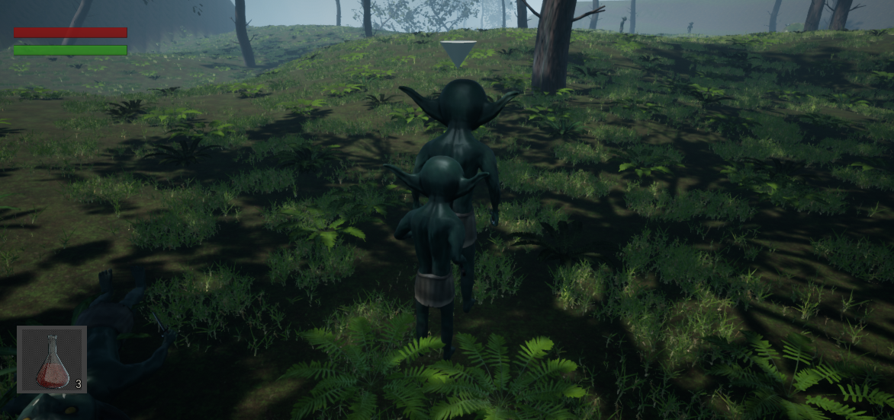 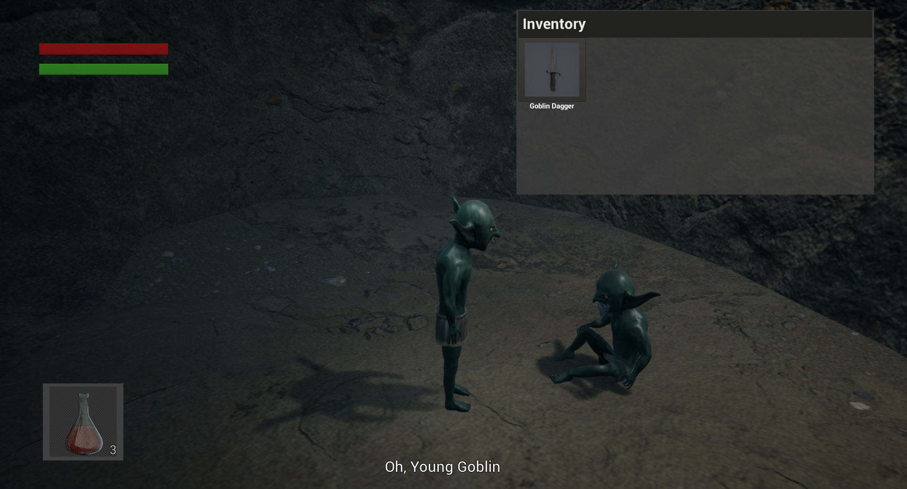 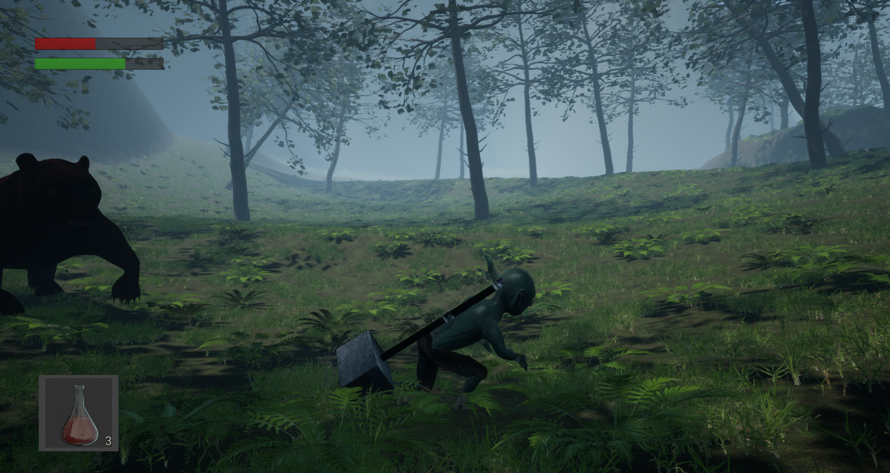ProjectOYG
This project is a roguelike heavily based off the game 'The Binding of Issac'. I used a grid like format where each room which has to be within certain dimensions(5:3 - 10:6, 1:1 - 2:2). There are three main actors that the level is based on. Firstly, the 'FloorGraph' executes the main code loop and is where things like: "how many rooms?" are decided. Next, 'FloorRoom' is the main actor that Graph is made up of and is what the player traverses through. Rooms spawn enemies, spawn consumables, etc. The last actor is another object the room generates randomly, which is the 'FloorDoor'. Doors are what dictate additional room generation. When a Door is instantiated it has a chance to either be closed or open. If the door is open that means the door has no collision and should spawn a new room relative to the door position. If the door is closed, the door does have collision and does not spawn any rooms. In summary, the process for level generation is the 'FloorGraph' spawns an intial room called the 'StartRoom', then the floor graphs starts the loop of Rooms spawn Doors and then Doors Spawn Rooms. Currently this project is relatively new. The primary goal for this project was to refine some of the ideas in ProjectOYG in a fresher and hopefully more refined game. For example, when I initial started work on ProjectOYG I didn't know what AnimMontages or AnimNotifies were, whereas for this project I immediately used them to build out actions like attacks. I ultimately chose a roguelike because level design was one of my main roadblocks in continuing that ProjectOYG. I still aim to implement much further for the player character. The goal would be to create multiple characters to choose from that all had their own unique mechanics. Beyond that there is still much more variety and progression I'd to include.
Video Link: https://www.youtube.com/watch?v=9ZKiAFZQgTM
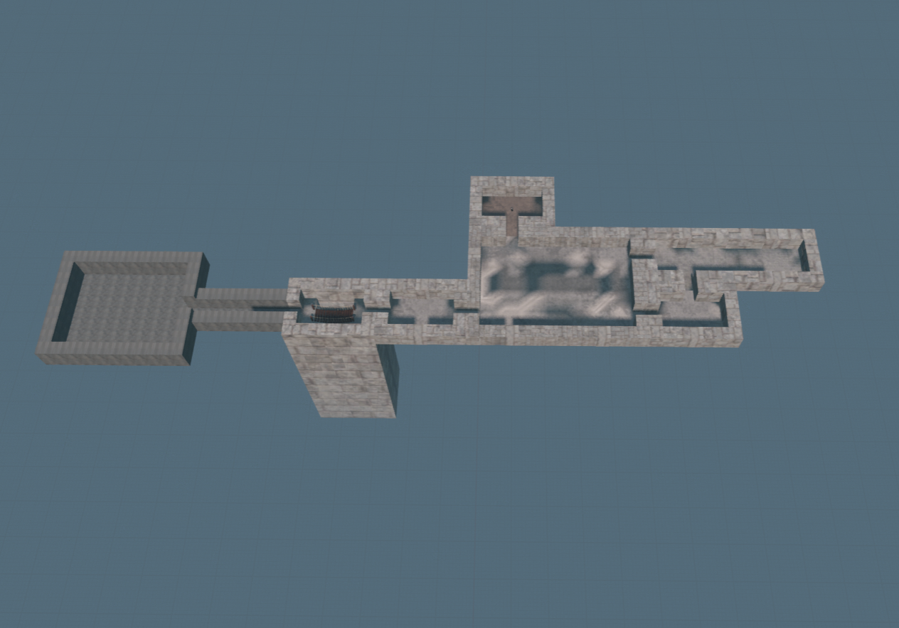

Contact
Email: nchri003@ucr.edu
Cell: (661) 244-7912
LinkedIn: noah-christensen